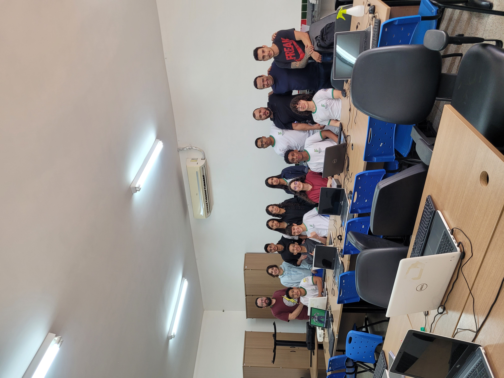
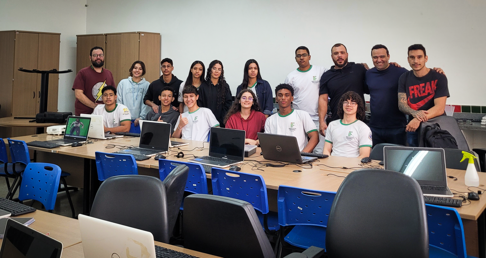

Autonomo
Robo Seguidor de Linha
Usa sensores infravermelhos para identificar o trajeto e controlar motores DC.
- Arduino
- Sensor IR
- Ponte H
- C/C++
 Cyber Capivaras
Fazer login
Cyber Capivaras
Fazer login
Robos
Prototipos criados para competicoes, testes de sensores e aprendizado tecnico.

Usa sensores infravermelhos para identificar o trajeto e controlar motores DC.

Protótipo movel para desviar de obstaculos e estudar leitura de ambiente.